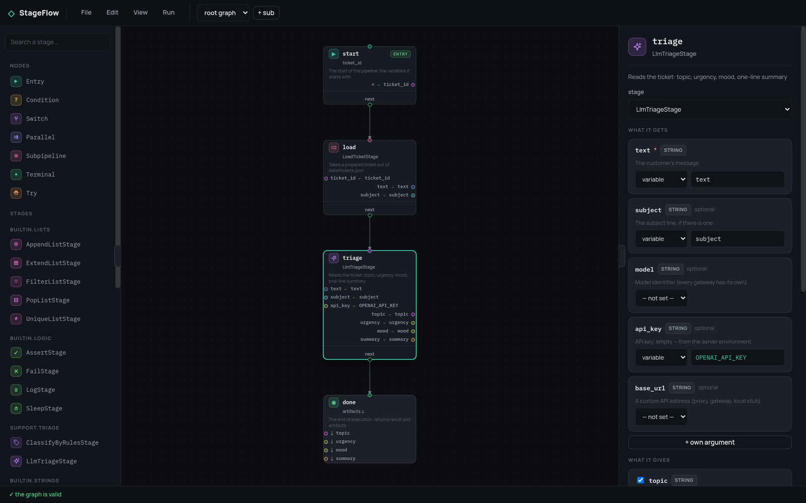
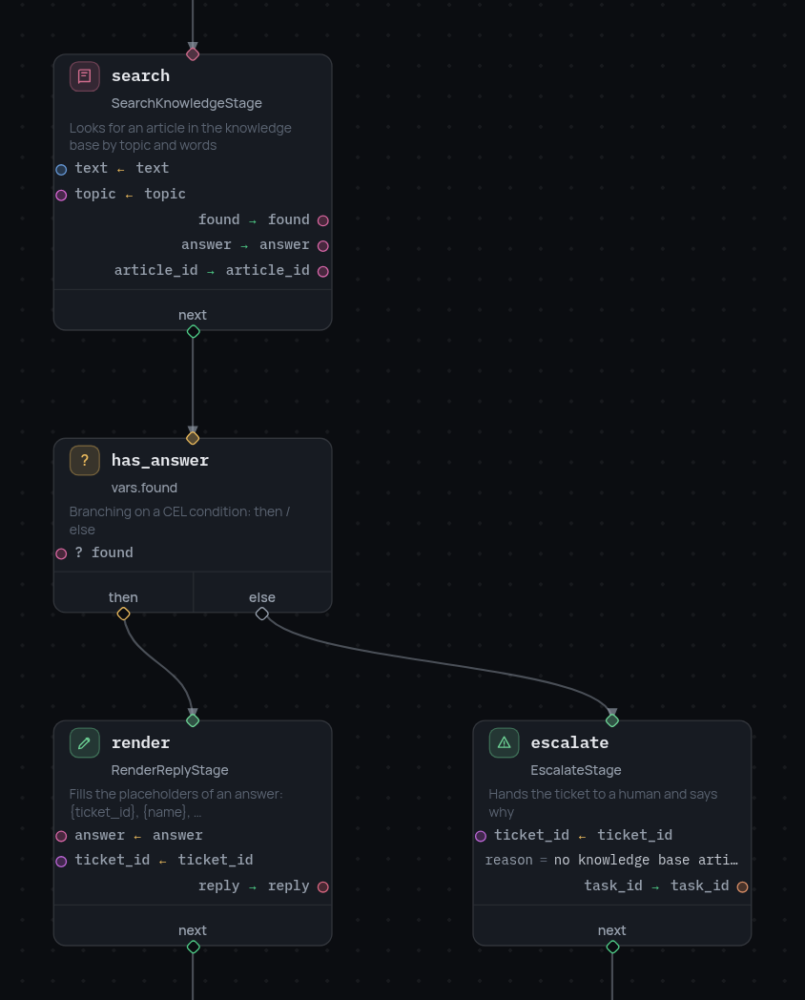
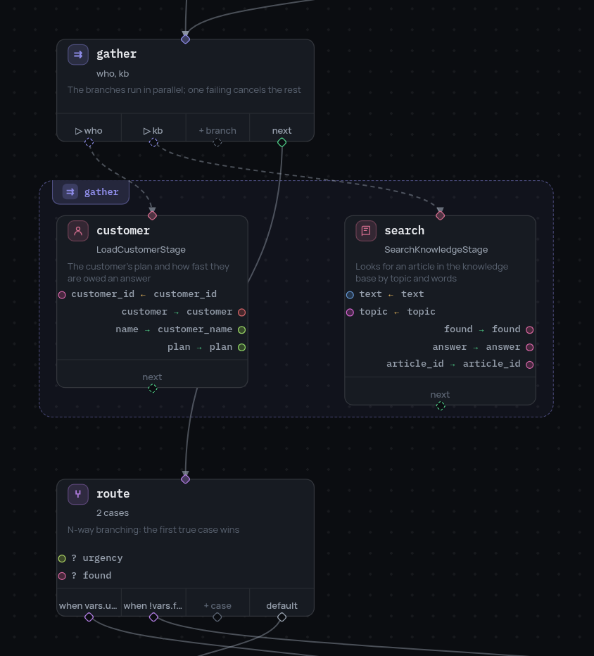
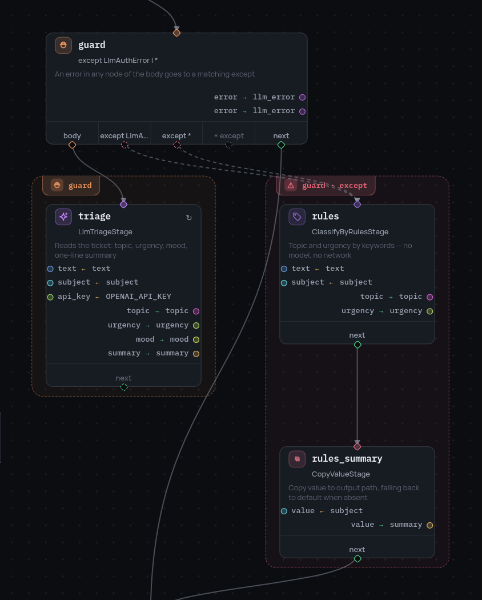
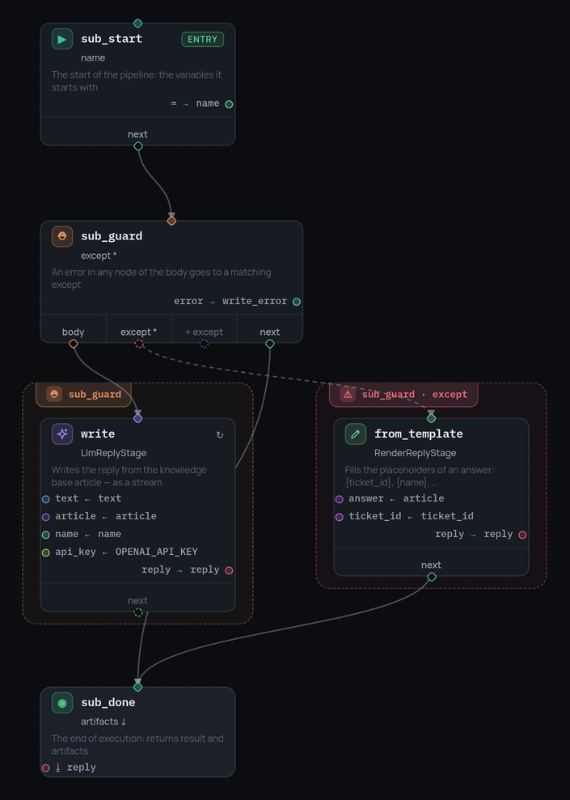
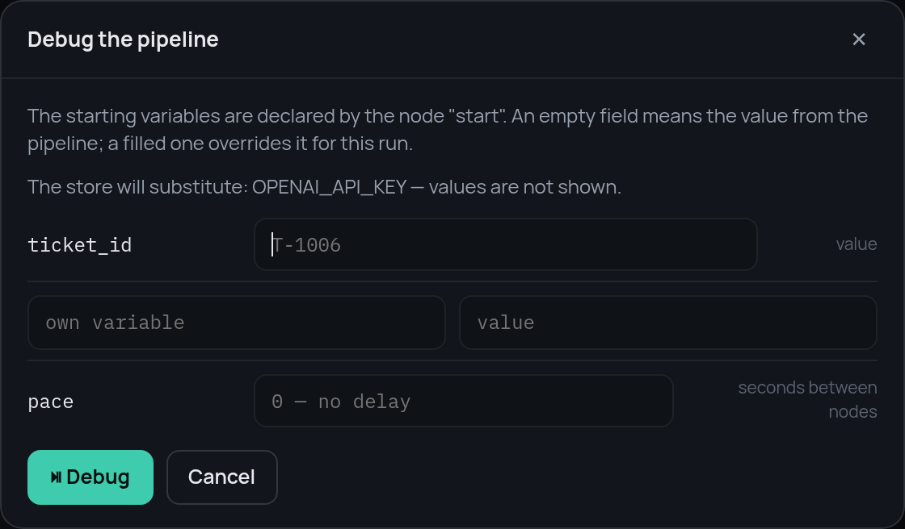
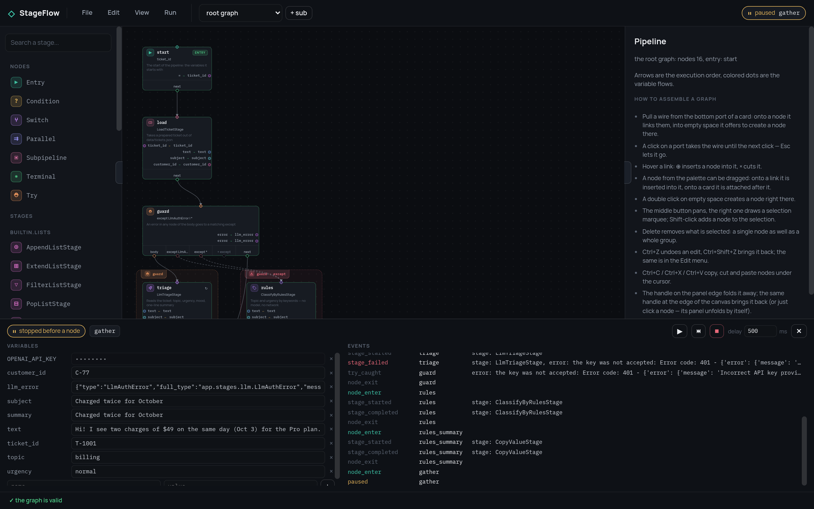
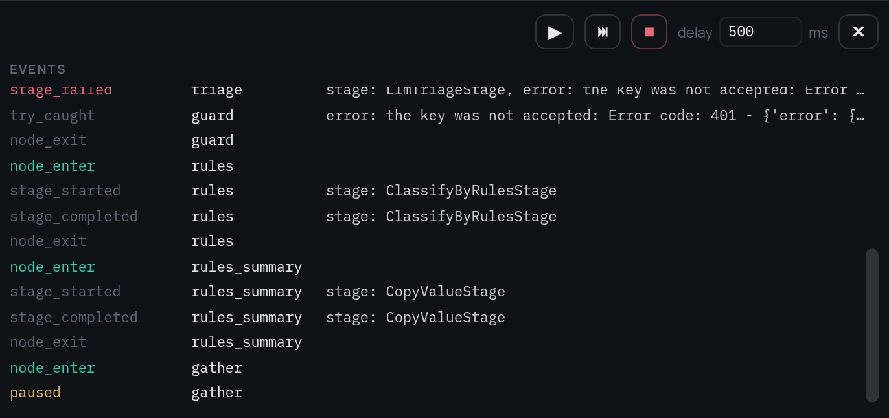
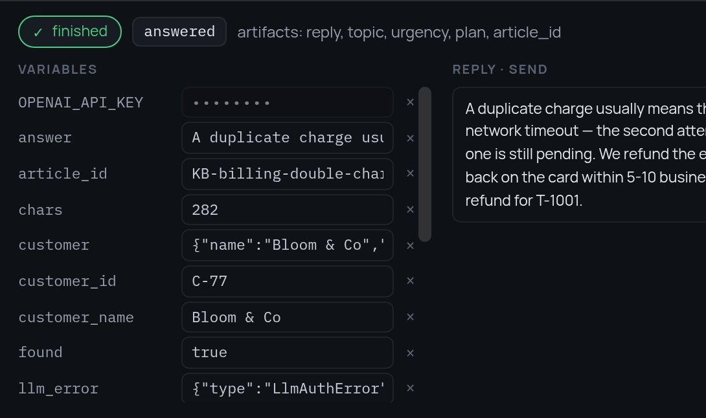
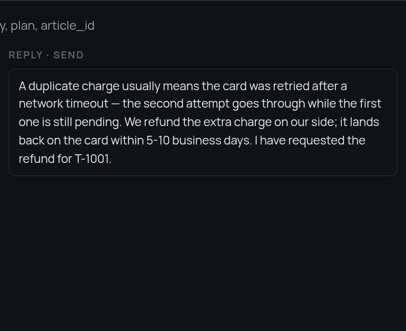

Worked example: a support bot¶
The reference pages take one thing at a time. This one takes a single working pipeline and follows it from a JSON file to a debugged run — in the visual editor, against a real backend.
Three repositories are involved:
| Repository | What it is |
|---|---|
| stageflow | the core: nodes, the frame, CEL, retry, try/except, parallel branches, subpipelines |
| stageflow-example | a backend: the stages of a support bot, four pipelines, the run API |
| stageflow-ui | the editor: static front-end, holds no stages and executes nothing |
Starting both halves¶
The backend — the stages and the run API:
git clone https://github.com/leo-need-more-coffee/stageflow-example
cd stageflow-example
pip install -r requirements.txt
python main.py # http://127.0.0.1:8765
The editor — a static page:
git clone https://github.com/leo-need-more-coffee/stageflow-ui
cd stageflow-ui
npm start # http://127.0.0.1:8080
Open the editor and type http://127.0.0.1:8765 on the connection screen
(?backend=http://127.0.0.1:8765 in the URL skips the question). "File" →
"Import JSON…" opens one of the pipelines from pipelines/.

The palette on the left is what the backend answered to GET /api/stages: the
specs the core builds out of the stage docstrings.
The editor keeps no registry of its own and executes nothing — a run happens
on the backend, in a real Session with the core's StepDebugger. What the
debugger shows is the semantics itself rather than a second implementation of
it in JavaScript.
A straight line¶
01-triage.json is four nodes: an entry, two stages and a
terminal.
The entry node is where the frame comes from: ticket_id is a starting
variable, and the run dialog offers to override it. Everything after it reads
and writes the same frame, which is why the cards have two
halves — arg ← var above the divider, out → var below it:
{"id": "triage", "type": "stage", "stage": "LlmTriageStage",
"arguments": {"vars": {"text": "text", "subject": "subject", "api_key": "OPENAI_API_KEY"}},
"outputs": {"topic": "topic", "urgency": "urgency", "mood": "mood", "summary": "summary"}}
The panel on the right is the same node as a form: what it gets, what it
gives, and which of its arguments are optional. The variables block of the
pipeline declares the types — topic is a string, and a
node that writes a number into it is rejected before the run starts.
A fork¶
02-auto-reply.json adds a knowledge base search and the first branch.

A condition is one CEL expression and two roads. The
expression here is vars.found, written by the search stage one node earlier:
{"id": "has_answer", "type": "condition", "condition": "vars.found",
"then": "render", "else": "escalate"}
Both roads end in terminals of their own, and which terminal was reached is the result of the run.
Two branches at once, and N roads¶
03-routing.json loads the customer and searches the knowledge base at the
same time, then routes on what came back.

A parallel node names its branches; the editor
frames the nodes that belong to them. The branches run concurrently, their
writes merge back into one frame, and one branch failing cancels the rest.
{"id": "gather", "type": "parallel",
"branches": [{"id": "who", "entry": "customer"}, {"id": "kb", "entry": "search"}],
"next": "route"}
A switch is N roads instead of two: the cases are tried in order, the first
true one wins, and default is where nothing matching goes.
{"id": "route", "type": "switch",
"cases": [{"when": "vars.urgency == 'high'", "next": "escalate_urgent"},
{"when": "!vars.found", "next": "escalate_unknown"}],
"default": "compose"}
Errors are roads too¶
04-support-bot.json is the same bot with the model road guarded. The stage
that reads the ticket needs a key and a network; both can be missing, and that
is not an exception to be printed — it is a road on the graph.

A try node frames a region: an error in any node of the body
goes to a matching except, and the error itself lands in the frame under
result_var.
{"id": "guard", "type": "try", "body": "triage", "next": "gather",
"except": [{"error_equals": ["LlmAuthError"], "next": "rules", "result_var": "llm_error"},
{"error_equals": ["*"], "next": "rules", "result_var": "llm_error"}]}
LlmAuthError means "no key, or it was refused" — the road out of it leads to
ClassifyByRulesStage, which decides topic and urgency by keywords and needs
nothing at all. The * handler is the same road for anything else.
What is worth repeating rather than routing is a retry, and it belongs to
the node (the ↻ mark on the card):
"retry": [{"error_equals": ["LlmRateLimited", "LlmUnavailable"],
"max_attempts": 3, "interval_seconds": 2}]
A graph behind one node¶
The reply is written by a subpipeline: a graph of its own, with its own
entry, its own try and its own terminal.

{"id": "compose", "type": "subpipeline", "subpipeline_id": "compose_reply",
"inputs": {"text": "text", "article": "answer", "name": "customer_name", "ticket_id": "ticket_id"},
"artifact_outputs": {"reply": "reply"}, "next": "send"}
inputs is the whole of what the child frame starts with — nothing else of
the parent's frame is visible inside — and artifact_outputs is what comes
back out of the child's terminal. In the editor the subpipeline is a separate
graph, chosen in the toolbar next to "root graph".
Running it a node at a time¶
"Run" → "Debug step by step" asks for the starting variables first. The
defaults declared by the entry node are the placeholders; a filled field
overrides one for this run only.

The line about the store is the secrets part: the editor knows the
NAME OPENAI_API_KEY and never its value.
Then the session stops before the very first node and goes on by command.

Left is the frame at the stop point, and every value in it is editable: a
write is applied before the next node and checked against the declared type, a
mismatch rejected with a var_rejected event instead of a crash. Right is the
event stream of the run — node_enter / node_exit, stage_started /
stage_completed, paused, and everything the core reports about branching.
This run was started with a key the API would not accept, and the log says so
in three lines: the stage failed, the try caught it, execution went on at
rules.

That is the except road being taken, in the graph and in the log at once.
With no key configured at all the same thing happens with no OpenAI API key
as the message: to the graph both are LlmAuthError, and both lead to the
keyword rules.
The controls are the debugger's: a step, a run with a pause between nodes
(delay), resume, stop. See step debugging for the same
thing from Python.
The result¶
A terminal node ends the run with a result and a list of artifacts — the
variables worth keeping out of the whole frame.
{"id": "answered", "type": "terminal", "result": {"status": "answered"},
"artifacts": ["reply", "topic", "urgency", "plan", "article_id"]}

The frame it ended with is still there to be read — including llm_error,
which is how a run that took the fallback road can be told from one that never
needed it.
The middle column of the panel is a text stream:

It is not knowledge about this bot. Any event whose payload looks like
{"stream": true, "text": "…", "label": "…"} is shown there, so a stage that
types out an answer, a transcription and a build log all arrive the same way:
Secrets¶
The key is given to the server, not to the pipeline:
The editor asks GET /api/secrets and gets names only. A pipeline reads the
name as an ordinary variable (api_key ← OPENAI_API_KEY), the backend
substitutes the value into the starting frame, and everything on the way back
to the browser — the frame, the event log, the stage arguments in telemetry —
has it replaced with ••••••••. That is why the debugger above shows the key
masked while the stage that used it saw the real thing.
Things to try¶
The situations are prepared data in data/, read on every run, so there is
nothing to restart after editing them.
Starting ticket_id |
Which road the graph takes |
|---|---|
T-1001 |
a double charge: an article is found, the reply is written and sent — {"status": "answered"} |
T-1002 |
a dashboard stuck on loading: an article is found too, but urgency == 'high' — the first case of the switch escalates |
T-1005 |
a feature request: nothing in the knowledge base matches, so !vars.found escalates |
A road that is otherwise hard to reach is one frame edit away: stop the run
before route, set urgency to high in the variables, and the same ticket
that was answered a moment ago goes to a human instead.